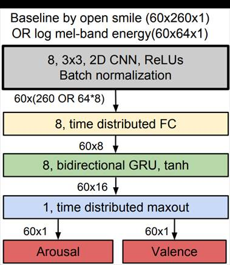
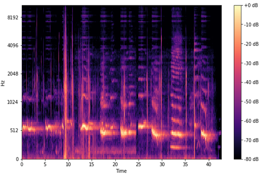
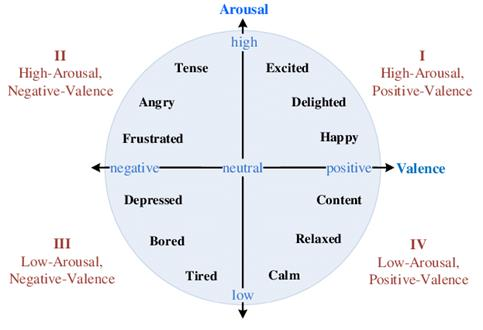

CLASSIFICAÇÃO DE EMOÇÕES EM MÚSICAS UTILIZANDO APRENDIZADO DE MÁQUINA.
Lucas Lavratti#1, Rafael B. G. Bueno#2, Prof. Dr. Alceu S. Britto#*3
#Escola Politécnica, Pontifícia Universidade Católica do Paraná
Rua Imaculada. Conceição, 1155, Curitiba, PR, 80215-901, Brasil
*PPGIa - Programa de Pós-Graduação em Informática
1lucas.lavratti@pucpr.edu.br
2rafael.gradowski@pucpr.edu.br
3alceu@ppgia.pucpr.br
Resumo: A música está presente na sociedade há milhares de anos e um de seus componentes principais é a emoção. Entretanto, o reconhecimento de emoções em músicas é um problema de alta complexidade e cercado de subjetividade. Esta tarefa é considerada um desafio computacional por muitos e é encarada pela literatura como um campo extenso e que apesar de resultados iniciais interessante, ainda necessita de pesquisas. Neste projeto será desenvolvido uma solução em software que utiliza técnicas modernas de aprendizado de máquina segundo a abordagem CRNN para o reconhecimento de emoções em músicas. Este software tem como proposta a aproximação do público musicista ou interessado com as tecnologias utilizadas por acadêmicos, uma vez que existe uma curva de aprendizado intimidadora para muitos membros da comunidade.
Palavras-chave – Aprendizado de máquina, Aprendizado profundo, Redes Neurais Convolucionais recorrentes, Reconhecimento de emoções em músicas.
Key-words – Machine Learning, Deep Learning, Convolutional Recurrent Neural Networks, Music Emotion Recognition.
1. Introdução
A análise musical com o intuito de identificar o objetivo do artista é um problema multivariável uma vez que parâmetros como ritmo, notas e arranjos, duração e tempo, instrumentos, e outros fatores conversam de modo a produzir um conjunto complexo de dados a serem analisados. Diante disto nos questionamos de que forma seria possível que músicos teriam a certeza de que suas obras estão tendo o efeito desejado? O tema abordado neste projeto será o estudo e desenvolvimento de software baseados nas tecnologias apontadas pela literatura. Uma das tecnologias que podem ser utilizadas para auxiliar a identificação de emoções em música é a inteligência artificial, principalmente o aprendizado profundo, como demonstrado por (DELBOUYS et al., 2018).
Este documento está separado nas seguintes seções:
I. Introdução;
II. Detalhamento do projeto;
III. Procedimentos de teste e validação do projeto;
Detalhamento do Projeto
O projeto do sistema para reconhecimento de emoções em músicas tem como base duas etapas distintas em relação ao seu desenvolvimento. Inicialmente será realizado a concepção, treinamento e aperfeiçoamento da Rede Neural Convolucional Recorrente (CRNN) que fará a extração das informações de Valence e Arousal das amostras de interesse. Após este componente ter sido completo, será iniciado o desenvolvimento de uma interface e módulos auxiliares a utilização da rede CRNN feita na etapa anterior. Está ordem será obedecida uma vez que o processo de desenvolvimento da CRNN resulta em uma rede neural já treinada e não é interessante para o software final compreender a criação e treinamento destas redes, mas sim a utilização da tecnologia pelo usuário final.
O que é uma CRNN?
Para compreendermos o que é uma CRNN, primeiramente deve-se estabelecer alguns conceitos básicos de CNN e RNN.
Uma CNN é uma rede neural artificial baseada na operação matemática de convolução entre os dados de entrada segundo um kernel – também chamado de janela – de tamanho pré-definido. A combinação de várias camadas de convolução é a característica predominante de CNNs. Essas redes neurais possuem grande capacidade de extração de features e são largamente utilizadas em tarefas de classificação.
O funcionamento de uma RNN pode ser brevemente resumido, por sua vez, como uma rede neural que utiliza informações temporais durante o processamento dos dados de entrada. Existem diversas abordagens diferentes de RNN com diferentes filosofias de funcionamento, mas todas tem a temporalidade e recorrência dos dados de entrada como fatores importante na saída. No domínio da música este tipo de característica é muito proveitosa dado que a repetição, intervalos e tempo são intrínsecos a mídia em questão.
A CRNN pode ser, então, descrita pela combinação das abordagens CNN e RNN, de maneira a possibilitar que a rede neural tenha a capacidade de extrair informações úteis e em diferentes escalas do conjunto de dados. Esta abordagem possibilita que o modelo compreenda de forma mais generalizada os componentes representativos das features nas músicas.
A abordagem feita por (MALIK et al., 2017) pode ser usada como exemplo de maneiras adequadas de organizar o modelo e será utilizado como modelo inicial para a rede CRNN que será desenvolvida neste projeto.
|
Figura 1: Estrutura de rede neural convolucional recorrente proposta para extração de emoções em músicas |
|
 |
|
Fonte: (MALIK et al., 2017)
|
O desenvolvimento da CRNN, seu treinamento e aperfeiçoamento será feito de forma exploratória a fim de compreender uma gama diversa de estruturas internas e parâmetros.
O dataset que será utilizado para o treinamento e validação do modelo será o proposto por (SOLEYMANI et al., 2013). Neste dataset estão classificados 1000 trechos de músicas com os devidos direitos de utilização. As amostras contidas neste banco foram manualmente classificadas por pelo menos 10 pessoas cada uma, eliminando ambiguidade e garantindo uma boa qualidade nos dados.
A segunda fase de testes será feita com a assistência de especialistas na área (músicos e professores), que além de selecionarem outras músicas classificadas por eles, irão contribuir com a produção de pequenos samples de músicas em seguida classificados pelo programa. Cada um dos participantes recebera uma pequena previa de como são definidos os parâmetros de pesquisa e como os resultados serão apresentados.
A estrutura resultante desta etapa será portada para o software final na forma treinada e otimizada. Já o desenvolvimento da interface se dará de forma a compatibilizar a CRNN em uma experiência positiva para o usuário.
Especificações gerias do software
O software final obedecerá às seguintes especificações:
· Software portátil, de fácil instalação;
· Interface gráfica;
· Entrada de arquivos para classificação em formato de áudio (.mp3 ou .wav);
· Extração de emoções em músicas (modo música individual ou múltiplas músicas) com resposta em espaço V-A;
· Visualização textual e gráfica de dados extraídos;
· Histórico de dados.
Estas especificações são descritas a seguir.
Portabilidade e instalador
Devido à natureza do software, será necessário desenvolver um instalador para que o software instale as dependências necessárias para o seu funcionamento de maneira mais simplificada. A princípio, o objetivo é que o software possa ser executado após a instalação por parte do usuário apenas do interpretador Python e do nosso software, sem necessidade de baixar e instalar bibliotecas adicionais.
Interface gráfica
Como o intuito do projeto é aproximar do usuário final ferramentas complexas que normalmente necessitam de conhecimento técnico, é necessário que a fermenta seja fácil de ser utilizada pelo público em geral. A interface gráfica é mais amigável ao usuário do que alternativas utilizando apenas interfaces de linha de comando e por este motivo será utilizada para a interatividade do software.
Entrada de arquivos
A entrada de arquivos para a classificação deve funcionar de modo simples e eficiente. O projeto será inicialmente capaz de interpretar arquivos de áudio em formato mp3 uma vez que este é um formato padronizado e muito utilizado. Não será descartado a capacidade do programa interpretar outros formatos de arquivo, mas de forma secundária e não garantida (o usuário será avisado da possibilidade de falhas durante o uso de arquivos diferentes da especificação).
Extração de emoções
O componente de extração e emoções será a CRNN pré treinada durante a faze de desenvolvimento anterior e terá seu funcionamento análogo a uma caixa preta e produzindo o resultado em espaço V-A.
Para utilização adequada dos algoritmos propostos é necessário aplicar pré processamentos nas amostras a fim de manuseá-las mais facilmente. Dois dos pré-processamentos fundamentais para a o funcionamento do programa será a segmentação da música em partes de tamanho variado (definido pelo usuário na tela de configurações) e a extração de um espectrograma de Mel – uma combinação de espectrogramas comuns com a escala de Mel, a fim de ser mais adequado a audição humana, como descrito por (GARTZMAN, 2020) – e será feito utilizando a biblioteca librosa como demonstrado pelos autores da biblioteca em sua documentação (MCFEE et al., 2020) e por (GARTZMAN, 2020).
|
Figura 2: Espectrograma de Mel |
|
 |
|
Fonte: (GARTZMAN, 2020)
|
Visualização de dados
A visualização dos dados extraídos da música deve ser apresentada de maneira visual em um gráfico de espaço VA (valence-arousal space) com as devidas legendas e auxílios de interpretação. Em especial, nota-se que é necessário explicar o significado deste espaço para que o usuário possa interpretar corretamente o gráfico apresentado.
O espaço VA é definido por um plano de coordenadas bidimensional com dois eixos, um horizontal e um vertical. O eixo horizontal corresponde ao atributo Valence (“ânimo”), e o eixo vertical ao atributo Arousal (“intensidade”).
|
Figura 2: Exemplos de emoções em espaço VA |
|
 |
|
Fonte: (YU et al., 2016)
|
Como comentado pelo autor (BESTELMEYER; KOTZ; BELIN, 2017), o “animo” está associada a positividade ou negatividade de uma experiência e a “intensidade” a quão forte é a reação a experiência. Uma das motivações para a criação deste instrumento é expressar as diferentes emoções como parte de um espectro contínuo, como proposto por (RUSSELL, 1980) e utilizado por (YU et al., 2016), e não apenas emoções discretas.
Histórico local
Uma funcionalidade que será entregue é a possibilidade de armazenar os dados de cada extração em um arquivo em formato .csv que poderá ser posteriormente visualizado pelo usuário tanto no software que estamos utilizando quando em outras aplicações de sua escolha (como Microsoft Excel ou Google planilhas)
Procedimentos de teste e validação do projeto
Os testes e validação do projeto serão divididos em duas partes: Experiência do usuário e acurácia do reconhecimento de emoções feita pelo software.
A acurácia do reconhecimento de emoções
Os testes e validações relativos ao reconhecimento de emoções será feito segundo os moldes propostos na literatura durante o Emotion in Music Task at MediaEval 2015¸uma vez que o algoritmo proposto se encaixa no âmbito proposto pelos organizadores (ALJANAKI; YANG; SOLEYMANI, 2015). Estas avaliações qualitativas envolvem treinar e testar o sistema desenvolvido com um dataset pré-selecionado e disponibilizado pelos autores (SOLEYMANI et al., 2013). Os parâmetros utilizados para a validação do modelo serão Arousal e Valence (Espaço V-A), avaliados pelo erro médio quadrático (Root Mean Square Erro, ou RMSE).
A experiência do usuário
A validação da experiência do usuário (UX) é de grande importância para compreender a maneira que o público alvo interage com a aplicação (RIIHIAHO, 2018). Esta avaliação proporciona uma base para que o produto desenvolvido possa evoluir de maneira a agradar uma maior parcela dos usuários e agregar valor ao projeto como um todo.
O método selecionado para a execução dessa etapa é a avaliação remota não moderada da experiencia de usuário. Este método de avaliação foi escolhido por sua proximidade com o ambiente real de utilização do software, naturalidade da interação do usuário, custo reduzido e boa escalabilidade. O contraponto deste método é a quantidade menor de detalhes em cada avaliação. (BABICH, 2019)
Para a validação será distribuído o software aos usuários voluntários para que possam experimentar com as funcionalidades disponíveis. Após a interação, o usuário deverá preencher um formulário de forma a avaliar sua experiência. Ao final do período de validação, os resultados obtidos serão analisados e propostas de melhorias serão apresentadas.